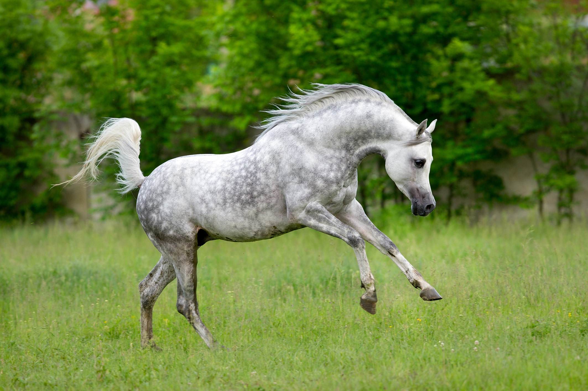

Midnight Shadow

Midnight Shadow är en slående svart Friesisk hingst som är 17 händer hög. Född en månskensnatt i Fjärrboda, han har en glänsande, onyxfärgad päls. Känd som "Nattens prins" är han en mästare inom dressyr och en publikfavorit i fryele. Trots sina framgångar i tävlingar trivs han bäst med att galoppera under den stjärnklara himlen och förkroppsligar mystiken och dragningskraften i sitt namn.
Stardust

I en avlägsen dal föddes en häst vid namn Stardust under en
strålande stjärnhimmel. Stardust var en gnistrande vit arabisk häst
med en päls som glänste som diamanter i månskenet.
Stardust och hans ägare Linnea blev snabbt ett känt par i dalen. Det
som gjorde Stardust speciell var att han lämnade en glimrande
stjärnstig i sitt spår när han sprang under stjärnorna.
En dag hotades dalen av en kraftig storm, och Linnea och Stardust
bestämde sig för att rida upp till bergen för att be om stjärnornas
hjälp. På toppen av berget utförde Stardust en magisk dans under
stjärnorna och skapade en stjärnstig som ledde bort från stormen.
Denna stjärnstig räddade dalen, och Stardust blev en
legend som för alltid skulle förknippas med stjärnornas magi.
I en avlägsen by levde en mystisk mörkbrun frieserhäst vid namn Seraphina. Hon hade en förmåga att trösta människor i sorg med sitt vänliga sätt och känsliga öga. När en sorgsen flicka vid namn Isabella kom till byn, hjälpte Seraphina henne att hitta tröst och vänskap. Tillsammans upplevde de magin i vänskapen mellan människa och häst, och Seraphina blev en legendarisk vän i byn.